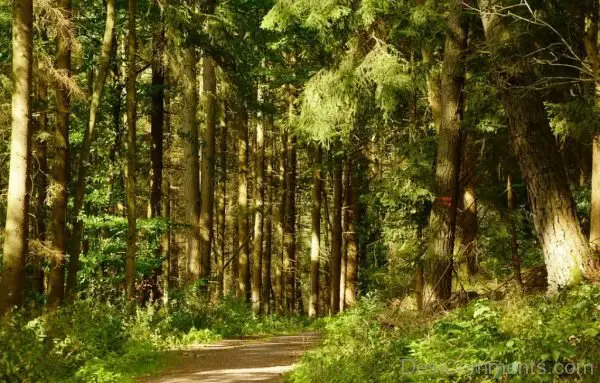
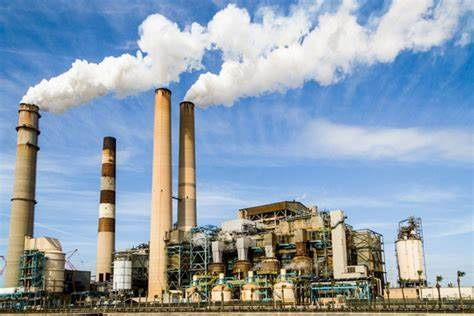
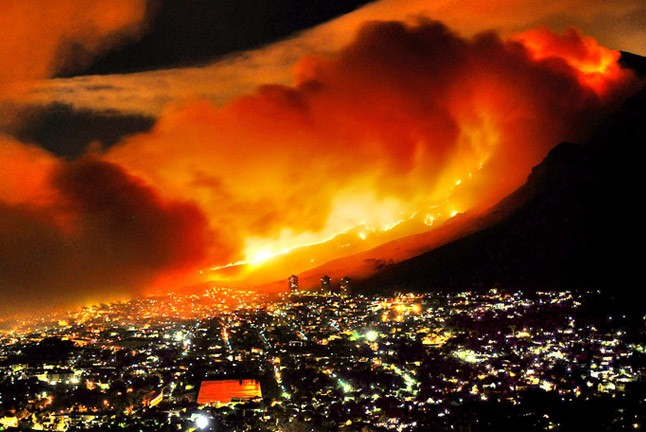

Nature is a beautiful thing. Why are we polluting it and setting it ablaze? It benifits nobody and yet, we still do it. If we need to pollute the world just to get around or power our homes which are definitely important, but think of all of the animals we are hurting. Think of how just by turning on a light, that was powered by smoke and other nasty gasses polluting our atmosphere.
One of the most notorious polluters. Factories. Just think, all of this coal being burned into smoke, and then spreading everywhere and making animals sick, hurting the atmosphere and just overall making the world some stinky, puffed up planet with nasty clouds everywhere. Who are we benifiting? We have been waiting for governments to do something about mass pollution and making energy without hurting the planet. Our parents have been waiting since they were kids.
Something that I hate is the idea that firefighters sometimes die trying to put out fires that we started. Sure, it could've been an accident. But we are all aware that making these nuclear plants and mines and factories is a risk that we are willing to take just to turn on our heater at home. Don't worry, the fires these factories start will be nice and tosaty. You don't need a heater. Are nuclear power plants flammable and explosive? Yes. Are solar panels flammable and explosive? No. Problem solved.
Here is a website about the most beautiful forests in the world. It shows the beauty of our Earth and why we need to protect it for our sake and the animals that live in these forests.
This is all about the threats that our factories cause for us every day. The black smoke in the sky is a fraction of the terrible amounts of damage to our ecosystem.
Here is an article about a fire that started in a factory and spreaded to the surrounding area causing lots of damage. It shows how factories cause fires just to give us energy. But would you prefer Wifi over waking up the next day and your house being upright and not ablaze?